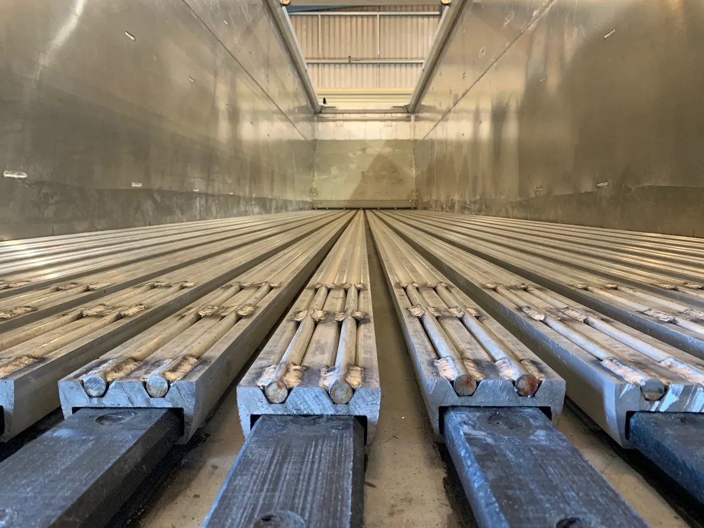
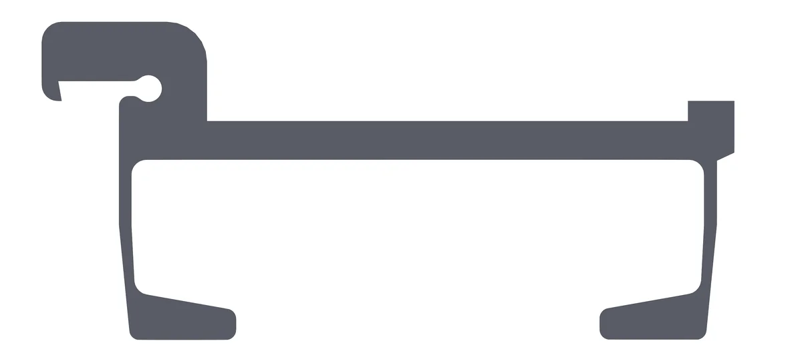
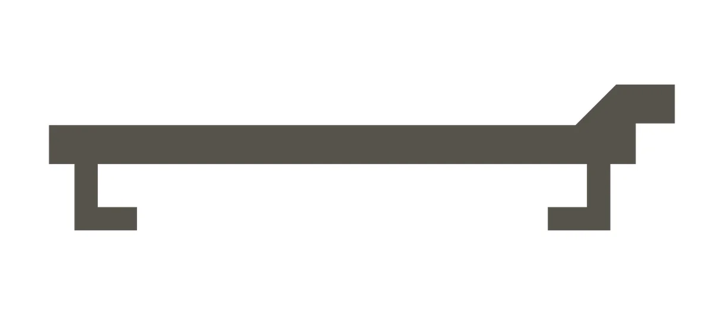
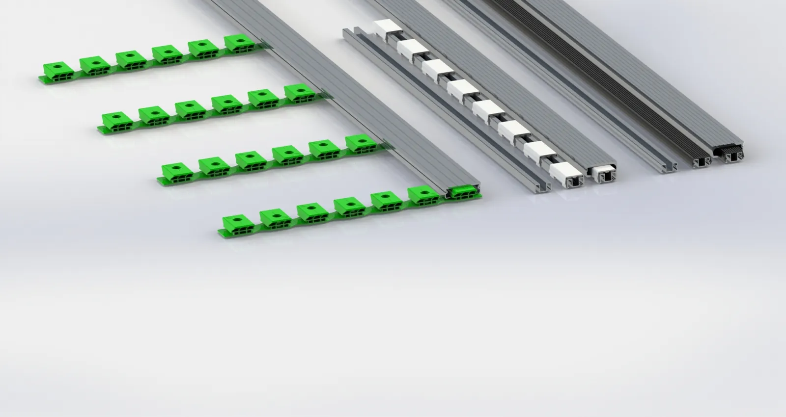
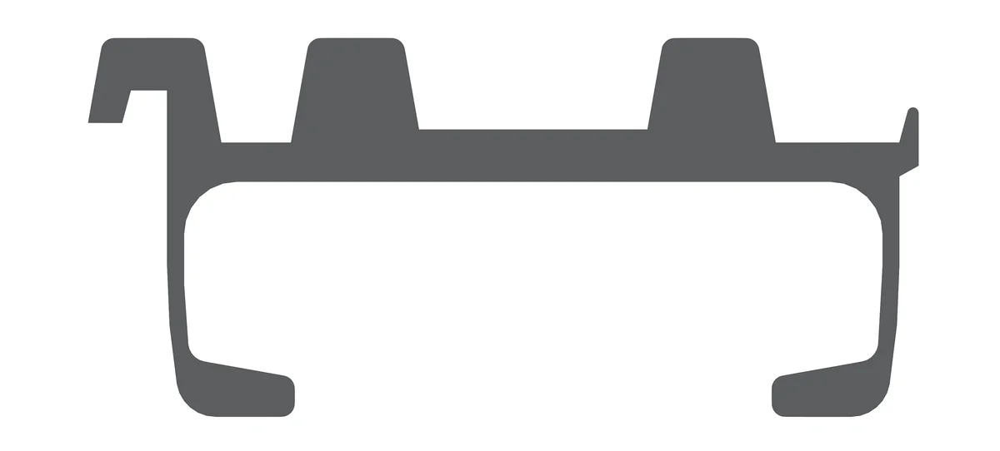

Thanh sàn nhôm và sàn nhựa
Thanh sàn là phần duy nhất chạm vào hàng. Chọn đúng profile thì hàng nhẹ không bị trượt, hàng hạt không lọt khe và hàng ướt không rò ra đường.

Các profile thanh sàn
Danh mục và công dụng theo trang giải pháp ngành của HALLCO. Bề rộng thanh theo hướng dẫn tra cứu nhanh của HALLCO Úc; bề rộng có sẵn tại Việt Nam được xác nhận khi báo giá.
| Profile | Hợp với | Đặc điểm | Bề rộng |
|---|---|---|---|
| Standard | Gỗ, dăm gỗ, mùn cưa | Profile cơ bản, dùng với i-4000 hoặc i-6000 tùy tải | 92, 97, 99 mm |
| LoadKeeper™ | Vỏ cây, mùn phủ | Chọn thay Double Ridge tùy loại hàng cụ thể | 112 mm |
| Double Ridge | Vỏ cây, mùn phủ | Hai gờ trên mặt thanh | Hỏi Như Tín |
| Triple Ridge | Rác khô, giấy, phế liệu | Ba gờ, có bản chống rò rỉ | 92, 100 (chống rò rỉ), 112 mm |
| AG Topseal™ | Nông sản, hàng hạt | Hạn chế hàng lọt khe và hao hụt | 95, 112 mm |
| Tufdeck™ | Phế liệu | Giữ được một lượng chất lỏng nhỏ | Hỏi Như Tín |
| NLR | Compost, phân hữu cơ | Chống rò rỉ | Hỏi Như Tín |
| NLR-HD | Hàng tái chế | Chống rò rỉ, bản dày chịu va đập | 92, 97, 112 mm |
| Thanh sàn nhựa | Hỏi Như Tín theo loại hàng | Thiết kế có bằng sáng chế của HALLCO® | Hỏi Như Tín |
| W Floor™ | Rác ướt, rác sinh hoạt | Kín nước hoàn toàn, đi với BRUTE | Xem W Floor |
NLR-HD: dày để chịu va đập
Hàng tái chế và phế liệu thường có cạnh sắc, rơi mạnh xuống sàn khi nạp. HALLCO làm NLR-HD dày hơn để hấp thụ va đập mà vẫn hạn chế thất thoát hàng.
- Profile ba gờ để bền hơn
- Dày 22 mm
- Bốn gân đứng giúp sàn cứng, ít xoắn
- Nhôm hợp kim cao cấp
- Bộ 21 thanh vừa phần lớn rơ-moóc
- Ổ trượt loại dài 3,6 m, phủ được nhiều diện tích hơn
Theo tờ giới thiệu bộ sàn tái chế của HALLCO Úc, ghép i-4000 với NLR-HD.


Sàn nhựa
Bên cạnh các profile nhôm, HALLCO có thanh sàn nhựa theo thiết kế được cấp bằng sáng chế. Hãng cũng đang giới thiệu một bộ dẫn động mới tên Shredder đi cùng thanh sàn nhựa.
Thông tin kỹ thuật công khai về dòng này còn ít, nên Như Tín không liệt kê thông số ở đây. Nếu bạn quan tâm, hãy cho chúng tôi biết loại hàng và điều kiện chở; Như Tín sẽ hỏi hãng và gửi tài liệu cụ thể.
Hỏi về sàn nhựaỔ trượt và sàn phụ
Phần nằm dưới thanh sàn, ít được nhắc tới nhưng quyết định sàn chạy êm và bền.
- Ổ trượt Easy BearingLoại dài 3,6 m, phủ diện tích lớn.
- Ổ trượt liền (chống rò rỉ)Đoạn 2,7 m, dùng cho sàn kín.
- Ổ trượt dạng dảiCho thanh 97 mm và 112 mm.
- Ổ trượt FlicOnNhựa HDPE, kẹp lên sàn phụ.
- Sàn phụLoại M-Easy, và loại nâng cao cho sàn chống rò rỉ.

Cần thay thanh sàn? Đo ba kích thước
Khi đặt thanh sàn thay thế cho một sàn HALLCO đang dùng, hãy đo ba kích thước của thanh cũ theo cách HALLCO hướng dẫn:
- Mép chân đến mép chân: khoảng cách giữa hai chân bên dưới thanh.
- Độ dày: chiều dày của mặt thanh.
- Bề rộng mặt trên: đo ngang qua mặt trên của thanh.
Gửi kèm số sê-ri và mã model của bộ dẫn động. Tấm biển sê-ri nằm ở manifold đế phía sau, ở giữa hoặc chỗ gắn van chuyển. Nếu biển đã mất, chụp ảnh bộ dẫn động, sàn và chi tiết cần thay gửi cho Như Tín.
Hỏi phụ tùng thay thế